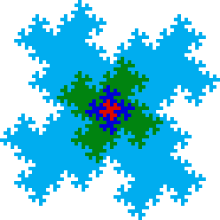
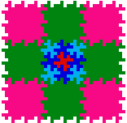
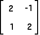
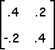

|  |
Purpose To illustrate three simple methods for making fractals that tile the plane.
Materials Drawing software with scale, rotate, and reflect options; IFS software
| Procedure |
Conclusion The first method can generate fractal tiles from many starting shapes, but the growth of the core area limits the variety of fractal tiles produced. The second method overcomes this difficulty, but suffers from limitations in the starting shapes. Both methods are completely elementary, but so far not very thoroughly explored. The third method uses IFS to generate the tile. Selecting the translations for the IFS illustrates the concept coset representative.
Exercises
1. Build your own tilings using the first method.
2. Build your own tilings using the second method.
| 3. Use the Area-Perimeter relationship to compute the dimension of the perimeter of the tile suggested by this picture. Does this answer surprise you? |
|  |
| 4. Apply the third method to this matrix |
|  |
| Sketch the parallelogram and select a residue system. Find the IFS to generate the correpsonding tile. Find another residue system. How does the alter the tile? |
| Hint: here is M-1 |
|  |
| The corresponding IFS values are |
5. Given a tile generated by either of the first two methods, find the third method IFS rules to generate that tile.
6. Reinterpret changing the coset representatives in method 3 in terms of the first two methods.